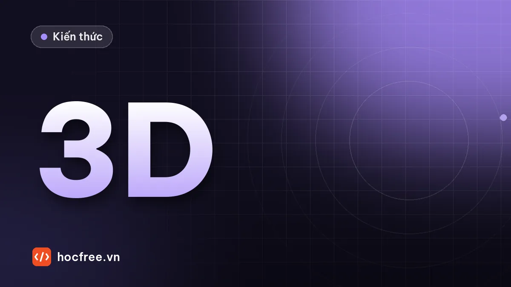

Cảm biến 3D: laser, ánh sáng cấu trúc, stereo, ToF và cách chọn
So sánh bốn công nghệ 3D bằng con số: độ phân giải laser ΔX/sin α, sai số stereo theo Z², dịch pha, khoảng không mơ hồ của ToF, bề mặt khó và bảng chọn.

Học xong bài này, bạn sẽ
- Hiểu tam giác hóa và ToF
- Tính độ phân giải chiều cao, sai số stereo, khoảng không mơ hồ ToF
- Chọn công nghệ 3D theo bài toán
Nên học trước: Dự án chặng 8: đo kích thước chi tiết cơ khí
Nội dung bài viết
- 1. Ý tưởng chung: tam giác hóa
- 2. Laser tam giác: độ phân giải và vùng khuất
- 3. Stereo: sai số tăng theo bình phương khoảng cách
- 4. Ánh sáng cấu trúc: chính xác nhưng cần vật đứng yên
- 5. Time-of-flight: nhanh, gọn, kém chính xác
- 6. Dữ liệu 3D trông như thế nào?
- 7. Bề mặt khó: điểm yếu chung của mọi cảm biến quang học
- 8. Chọn công nghệ theo bài toán
- Tóm tắt
- Bài tập
Mọi chặng trước của lộ trình làm việc với ảnh 2D: mỗi pixel là một độ sáng. Nhưng rất nhiều yêu cầu kiểm tra trong nhà máy là về chiều cao: chân linh kiện có đồng phẳng không, đường keo có đủ cao và đủ thể tích không, tấm kim loại có cong vênh không, chi tiết nằm lộn xộn trong thùng thì robot gắp ở đâu. Ảnh 2D không đo được những thứ đó một cách tin cậy: một vết lõm và một vết bẩn tối trông giống nhau, độ cao chỉ đoán được gián tiếp qua bóng đổ. Cảm biến 3D đo trực tiếp khoảng cách tới từng điểm. Bài mở đầu chặng 3D Vision này so sánh bốn công nghệ phổ biến: laser tam giác, ánh sáng cấu trúc, stereo và time-of-flight (ToF), tính bằng con số độ phân giải mỗi loại đạt được, và hướng dẫn chọn công nghệ theo bài toán.
Chặng này dùng lại nhiều kiến thức của chặng Calibration: mô hình camera pinhole, hiệu chuẩn nội tại, homography và hand-eye calibration. Code cần NumPy.
1. Ý tưởng chung: tam giác hóa
Ba trong bốn công nghệ (laser, ánh sáng cấu trúc, stereo) dựa trên cùng một nguyên lý: nhìn một điểm từ hai vị trí cách nhau một khoảng đã biết (hai camera, hoặc một camera và một máy chiếu/laser), đo góc nhìn từ mỗi vị trí, rồi giải tam giác để ra khoảng cách. Hai vị trí càng xa nhau (góc tam giác hóa càng lớn), sai số độ sâu càng nhỏ, nhưng vùng bị che khuất (một bên nhìn thấy, bên kia không) càng nhiều. ToF thì khác hẳn: đo thời gian ánh sáng đi và về.
| Công nghệ | Nguyên lý | Dữ liệu một lần chụp | Vật phải chuyển động? |
|---|---|---|---|
| Laser tam giác (laser line profiler) | Chiếu một vạch laser, camera nhìn nghiêng; chiều cao làm vạch dịch trong ảnh | Một profile (một đường cắt); quét nhiều profile khi vật chạy qua để có bản đồ chiều cao | Có (hoặc cảm biến chạy trên trục) |
| Ánh sáng cấu trúc (structured light, fringe projection) | Máy chiếu chiếu một chuỗi mẫu sọc/mã; camera nhìn nghiêng; giải mã sọc ra tọa độ máy chiếu rồi tam giác hóa | Cả vùng nhìn, sau vài đến vài chục ảnh | Không: vật phải đứng yên trong lúc chiếu chuỗi mẫu |
| Stereo (thụ động, hoặc chủ động có chiếu mẫu ngẫu nhiên) | Hai camera; tìm điểm tương ứng giữa hai ảnh; độ lệch (disparity) cho độ sâu | Cả vùng nhìn, một lần chụp | Không, chụp được cả vật chuyển động |
| Time-of-flight (ToF) | Phát ánh sáng điều chế, đo lệch pha (hoặc thời gian) của ánh sáng phản xạ | Cả vùng nhìn, một lần chụp, độ phân giải thấp | Không |
2. Laser tam giác: độ phân giải và vùng khuất
Cấu hình phổ biến: vạch laser chiếu vuông góc xuống băng tải, camera nhìn nghiêng một góc α so với vạch laser. Khi bề mặt cao lên một đoạn ΔZ, vạch dịch trong ảnh; độ phân giải chiều cao danh định xấp xỉ:
\[ \Delta Z \approx \frac{\Delta X}{\sin\alpha} \]trong đó ΔX là kích thước một pixel trên vật (độ phân giải ngang). Đây là giới hạn danh định ở một khoảng làm việc; sai số thực tế còn phụ thuộc bề mặt, nhiễu, và thuật toán tìm tâm vạch laser (bài sau tìm tâm dưới pixel, đạt tốt hơn một pixel nhiều lần). Góc α lớn cho ΔZ nhỏ, nhưng sau một bậc cao h, camera không nhìn thấy một vùng dài khoảng h·tan α (vùng khuất phía camera); laser cũng có vùng khuất của nó ở phía bậc khuất ánh sáng.
import numpy as np
fov_mm, so_px = 100.0, 2048 # vạch laser phủ 100 mm, ảnh 2048 pixel theo chiều vạch
dx = fov_mm / so_px
print(f"độ phân giải ngang ΔX = {1000 * dx:.1f} µm/px")
print(" α (độ) | ΔZ danh định (µm) | vùng khuất sau bậc 5 mm (mm)")
for alpha in (15, 30, 45, 60):
a = np.radians(alpha)
print(f" {alpha:4d} | {1000 * dx / np.sin(a):6.1f} | {5 * np.tan(a):5.2f}")độ phân giải ngang ΔX = 48.8 µm/px
α (độ) | ΔZ danh định (µm) | vùng khuất sau bậc 5 mm (mm)
15 | 188.7 | 1.34
30 | 97.7 | 2.89
45 | 69.1 | 5.00
60 | 56.4 | 8.66Tăng góc từ 15° lên 30° cải thiện ΔZ gần gấp đôi; từ 45° lên 60° chỉ còn cải thiện khoảng 20% trong khi vùng khuất sau bậc 5 mm dài gần gấp đôi. Khi chi tiết có nhiều bậc cao (chân linh kiện, khe hẹp), dùng hai camera nhìn từ hai phía hoặc hai laser để lấp vùng khuất. Ưu điểm lớn của laser: ánh sáng tập trung, mạnh, chịu được bề mặt tối và đen (cao su, nhựa đen) tốt hơn các phương pháp khác; tốc độ profile rất cao (hàng nghìn profile mỗi giây trở lên, tùy cảm biến), hợp với băng tải chạy liên tục.
3. Stereo: sai số tăng theo bình phương khoảng cách
Với hai camera đặt song song cách nhau một khoảng B (baseline), tiêu cự f (tính bằng pixel), một điểm ở khoảng cách Z có độ lệch giữa hai ảnh d = f·B/Z (pixel). Đạo hàm theo d cho sai số độ sâu ứng với sai số disparity Δd:
\[ Z = \frac{fB}{d}, \qquad \Delta Z \approx \frac{Z^2}{fB}\,\Delta d \]Sai số tăng theo bình phương khoảng cách: xa gấp đôi, sai số gấp bốn. Δd thực tế của các thuật toán stereo tốt cỡ vài phần mười pixel trên bề mặt có kết cấu tốt.
f_px, B_mm, dd = 1400.0, 100.0, 0.25 # tiêu cự 1400 px, baseline 100 mm, sai số disparity 0,25 px
print(" Z (mm) | disparity (px) | ΔZ (mm)")
for Z in (300, 500, 1000, 2000):
d = f_px * B_mm / Z
print(f" {Z:6d} | {d:6.1f} | {Z ** 2 / (f_px * B_mm) * dd:6.2f}")
print(f"muốn ΔZ = 0,5 mm ở Z = 1000 mm: baseline ≥ {1000 ** 2 * dd / (f_px * 0.5):.0f} mm") Z (mm) | disparity (px) | ΔZ (mm)
300 | 466.7 | 0.16
500 | 280.0 | 0.45
1000 | 140.0 | 1.79
2000 | 70.0 | 7.14
muốn ΔZ = 0,5 mm ở Z = 1000 mm: baseline ≥ 357 mmỞ 300 mm, stereo cho sai số dưới 0,2 mm; ở 2 m, gần 7 mm. Baseline dài hơn giảm sai số nhưng làm tăng vùng khuất và làm việc tìm điểm tương ứng khó hơn. Điểm yếu cố hữu của stereo thụ động: cần bề mặt có kết cấu (texture). Một tấm kim loại phẳng màu đồng nhất không có gì để so khớp giữa hai ảnh. Stereo chủ động khắc phục bằng cách chiếu thêm một mẫu chấm ngẫu nhiên (thường bằng ánh sáng hồng ngoại) lên vật. Bài 3 của chặng tự dựng ảnh stereo và chạy StereoSGBM của OpenCV.
4. Ánh sáng cấu trúc: chính xác nhưng cần vật đứng yên
Máy chiếu thay cho camera thứ hai: chiếu một chuỗi mẫu (mã Gray nhị phân để biết sọc thứ mấy, rồi các sọc hình sin dịch pha để nội suy vị trí trong sọc). Từ chuỗi ảnh, mỗi pixel camera biết nó nhìn thấy cột nào của máy chiếu, rồi tam giác hóa như stereo. Vì vị trí trên máy chiếu được mã hóa chứ không phải tìm bằng so khớp, phương pháp này không cần vật có kết cấu và đạt độ chính xác rất cao trên toàn vùng nhìn (với cảm biến tầm gần có thể tới mức chục µm; con số cụ thể xem datasheet của từng cảm biến). Cái giá: cần nhiều ảnh, nên vật phải đứng yên trong vài chục đến vài trăm ms; bề mặt bóng phản chiếu sọc sai chỗ.
Với dịch pha N bước, mỗi pixel có N cường độ Ik = A + B·cos(φ + 2πk/N); pha φ (vị trí trong sọc) giải bằng:
\[ \varphi = \operatorname{atan2}\!\Big(-\sum_k I_k \sin\tfrac{2\pi k}{N},\ \sum_k I_k \cos\tfrac{2\pi k}{N}\Big) \]rng = np.random.default_rng(0)
N = 4
phi_that = np.linspace(-np.pi + 0.01, np.pi - 0.01, 9) # pha thật tại 9 pixel (vị trí trong một sọc)
k = np.arange(N)[:, None]
I = 120 + 80 * np.cos(phi_that[None, :] + 2 * np.pi * k / N) + rng.normal(0, 2, (N, 9)) # 4 ảnh, có nhiễu
phi = np.arctan2(-(I * np.sin(2 * np.pi * k / N)).sum(axis=0), (I * np.cos(2 * np.pi * k / N)).sum(axis=0))
sai = np.angle(np.exp(1j * (phi - phi_that))) # sai số pha, đã quấn về (-π, π]
print("sai số pha lớn nhất:", f"{np.abs(sai).max():.4f} rad",
f"= {np.abs(sai).max() / (2 * np.pi) * 100:.2f}% chu kỳ sọc")
print("không phụ thuộc độ phản xạ: nhân I với 0,3 (vật tối hơn) →",
np.allclose(np.arctan2(-(0.3 * I * np.sin(2 * np.pi * k / N)).sum(0), (0.3 * I * np.cos(2 * np.pi * k / N)).sum(0)), phi))sai số pha lớn nhất: 0.0143 rad = 0.23% chu kỳ sọc
không phụ thuộc độ phản xạ: nhân I với 0,3 (vật tối hơn) → TrueSai số pha chỉ khoảng 0,2% chu kỳ sọc dù có nhiễu, và pha không đổi khi vật tối hay sáng hơn (A và B triệt tiêu trong công thức): đó là lý do dịch pha chính xác. Nếu một chu kỳ sọc trên vật rộng 2 mm, 0,2% chu kỳ là khoảng 5 µm theo phương ngang, trước khi đổi sang chiều cao bằng hình học tam giác hóa.
5. Time-of-flight: nhanh, gọn, kém chính xác
Camera ToF dạng sóng liên tục (indirect ToF) phát ánh sáng hồng ngoại điều chế ở tần số fmod, đo lệch pha φ giữa sóng phát và sóng phản xạ. Khoảng cách và khoảng không mơ hồ (vượt qua thì pha quay vòng, khoảng cách bị "gập" lại):
\[ d = \frac{c}{4\pi f_{mod}}\,\varphi, \qquad d_{max} = \frac{c}{2 f_{mod}} \]c = 299_792_458.0
for f_mod in (20e6, 60e6, 100e6):
d_max = c / (2 * f_mod)
print(f"f_mod = {f_mod / 1e6:5.0f} MHz: khoảng không mơ hồ {d_max:5.2f} m; lệch pha 1° ứng với {1000 * d_max / 360:5.2f} mm")f_mod = 20 MHz: khoảng không mơ hồ 7.49 m; lệch pha 1° ứng với 20.82 mm
f_mod = 60 MHz: khoảng không mơ hồ 2.50 m; lệch pha 1° ứng với 6.94 mm
f_mod = 100 MHz: khoảng không mơ hồ 1.50 m; lệch pha 1° ứng với 4.16 mmTần số cao cho độ phân giải pha tốt hơn nhưng khoảng đo ngắn hơn; nhiều camera kết hợp hai tần số để vừa xa vừa chính xác. Sai số thực tế của ToF thường ở mức milimét đến cỡ centimét, phụ thuộc mạnh vào độ phản xạ của vật, ánh sáng môi trường và đa đường (multipath: ánh sáng dội qua một bề mặt khác trước khi về, hay gặp ở góc trong của thùng). Độ phân giải ảnh cũng thấp hơn camera 2D nhiều. ToF hợp với: phát hiện vật có hay không, đo thể tích thô (thùng hàng, pallet), định vị cho robot ở khoảng cách lớn; không hợp với đo kích thước chính xác.
6. Dữ liệu 3D trông như thế nào?
- Bản đồ chiều cao (height map, range image): mảng 2D, mỗi ô là một chiều cao Z (mm), lưới X, Y đều. Profiler laser quét trên băng tải và cảm biến ánh sáng cấu trúc nhìn thẳng xuống thường cho dạng này. Ưu điểm lớn: dùng lại được gần hết công cụ xử lý ảnh 2D (ngưỡng theo chiều cao, blob, morphology, ROI).
- Đám mây điểm (point cloud): danh sách điểm (X, Y, Z), có thể kèm cường độ, màu, pháp tuyến. Dạng chung nhất, cần cho bin picking, so với mô hình CAD, ghép nhiều góc nhìn. Bài 4 của chặng xử lý đám mây điểm bằng Open3D.
- Ảnh độ sâu (depth map) của stereo, ToF: mảng 2D theo pixel camera, mỗi ô là khoảng cách dọc trục camera; đổi sang đám mây điểm bằng ma trận nội tại K.
- Điểm thiếu: vùng khuất, bề mặt quá tối, quá bóng, không có kết cấu cho ra ô không có giá trị (NaN hoặc 0). Thuật toán phải xử lý chúng một cách tường minh; đừng để 0 bị hiểu là "chiều cao bằng 0".
7. Bề mặt khó: điểm yếu chung của mọi cảm biến quang học
| Bề mặt | Vấn đề | Giảm thiểu |
|---|---|---|
| Kim loại bóng, gương | Phản xạ gương: hoặc chói bão hòa, hoặc ánh sáng dội đi chỗ khác; phản xạ kép tạo điểm "ma" | Đặt góc để tránh phản xạ gương về camera, giảm phơi sáng, dùng nhiều lần chụp với phơi sáng khác nhau (HDR), xử lý loại điểm ma; ánh sáng cấu trúc với mẫu xanh lam |
| Đen, tối (cao su, nhựa đen) | Ít ánh sáng về, nhiễu lớn, thiếu điểm | Laser công suất lớn hơn, phơi sáng dài hơn (nếu tốc độ cho phép) |
| Trong suốt, mờ đục (kính, nhựa trong, keo) | Ánh sáng xuyên vào trong, phản xạ từ bên dưới; tâm vạch laser bị lệch | Cảm biến chuyên dụng (confocal), hoặc đổi bài toán (đo từ bên cạnh, dùng ánh sáng khác bước sóng) |
| Khe sâu, góc trong | Vùng khuất; đa đường với ToF | Hai camera hai phía, góc nhỏ hơn, hướng quét phù hợp |
| Bề mặt mịn không kết cấu | Stereo thụ động không so khớp được | Stereo chủ động hoặc ánh sáng cấu trúc |
Cũng như chiếu sáng 2D (chặng Camera / Lens / Lighting), thử trên mẫu thật của khách hàng trước khi chọn cảm biến là bắt buộc: hầu hết hãng cảm biến 3D sẵn sàng thử mẫu miễn phí.
8. Chọn công nghệ theo bài toán
| Bài toán | Gợi ý đầu tiên | Vì sao |
|---|---|---|
| Đường keo, bead, mối hàn trên băng tải chạy liên tục | Laser profiler | Vật đang chạy; profile nhanh; đo tiết diện, chiều cao, thể tích theo chiều dài |
| Độ đồng phẳng chân linh kiện, chiều cao chi tiết nhỏ | Laser profiler (độ phân giải cao, góc hợp lý, hai phía nếu khuất) hoặc ánh sáng cấu trúc nếu dừng được | Cần độ phân giải Z cỡ µm đến chục µm |
| Cong vênh, độ phẳng tấm lớn, đứng yên tại trạm | Ánh sáng cấu trúc | Cả vùng một lần, chính xác, không cần chuyển động |
| Bin picking (gắp vật đổ lộn xộn trong thùng) | Ánh sáng cấu trúc hoặc stereo chủ động gắn trên/cạnh robot | Cả vùng, độ chính xác cỡ mm là đủ; cần đám mây điểm cho định vị 6 bậc tự do |
| Thể tích thùng hàng, pallet, có/không có vật | ToF hoặc stereo | Khoảng cách lớn, độ chính xác cm đủ dùng, rẻ, nhanh |
| Robot di động, tránh vật cản | Stereo chủ động, ToF | Cả vùng, một lần chụp, nhỏ gọn |
Tóm tắt
- Laser, ánh sáng cấu trúc và stereo đều là tam giác hóa: góc lớn thì chính xác hơn nhưng khuất nhiều hơn. ToF đo pha của ánh sáng điều chế.
- Laser: ΔZ ≈ ΔX/sin α, cần vật (hoặc cảm biến) chuyển động, nhanh, chịu bề mặt tối tốt.
- Stereo: ΔZ ≈ Z²·Δd/(f·B), sai số tăng theo bình phương khoảng cách; thụ động cần kết cấu, chủ động thì không.
- Ánh sáng cấu trúc (mã Gray + dịch pha): chính xác cao cả vùng, không phụ thuộc độ phản xạ, nhưng vật phải đứng yên.
- ToF: nhanh, gọn, khoảng xa, sai số mm–cm, chú ý khoảng không mơ hồ c/(2fmod) và đa đường.
- Dữ liệu là bản đồ chiều cao, ảnh độ sâu hoặc đám mây điểm, luôn có điểm thiếu cần xử lý tường minh. Thử trên mẫu thật trước khi chọn.
Bài tập
Bài 1. Chọn góc laser cho chân linh kiện
Cần đo chiều cao chân linh kiện với độ phân giải danh định ≤ 10 µm. Profiler có 2048 điểm trên vạch, cần phủ bề rộng 30 mm. Chân linh kiện cao 1,2 mm, khoảng cách giữa hai hàng chân là 0,8 mm (vùng khuất không được che kín khe). Góc α nhỏ nhất là bao nhiêu, và góc đó có gây khuất không?
Xem đáp án
dx = 30.0 / 2048
can_sin = dx / 0.010
print(f"ΔX = {1000 * dx:.2f} µm → cần sin α ≥ {can_sin:.2f}", "→ không góc nào đạt được" if can_sin > 1 else "")
print(f"ở α = 90°, ΔZ danh định = ΔX = {1000 * dx:.1f} µm; muốn 10 µm ở α = 30° cần ΔX ≤ {10 * np.sin(np.radians(30)):.1f} µm "
f"→ vạch chỉ phủ {2048 * 0.005:.1f} mm, hoặc cảm biến {30 / 0.005:.0f} điểm")
for alpha in (20, 30, 45):
print(f"α = {alpha}°: vùng khuất sau chân 1,2 mm dài {1.2 * np.tan(np.radians(alpha)):.2f} mm so với khe 0,8 mm")ΔX = 14.65 µm → cần sin α ≥ 1.46 → không góc nào đạt được
ở α = 90°, ΔZ danh định = ΔX = 14.6 µm; muốn 10 µm ở α = 30° cần ΔX ≤ 5.0 µm → vạch chỉ phủ 10.2 mm, hoặc cảm biến 6000 điểm
α = 20°: vùng khuất sau chân 1,2 mm dài 0.44 mm so với khe 0,8 mm
α = 30°: vùng khuất sau chân 1,2 mm dài 0.69 mm so với khe 0,8 mm
α = 45°: vùng khuất sau chân 1,2 mm dài 1.20 mm so với khe 0,8 mmYêu cầu không thể đạt bằng ΔZ danh định với vạch phủ 30 mm: cần sin α ≥ 1,46, mà ngay cả α = 90° cũng chỉ cho ΔZ = ΔX ≈ 14,6 µm. Muốn 10 µm danh định ở góc 30° thì ΔX phải ≤ 5 µm: hoặc vạch chỉ phủ khoảng 10 mm (quét nhiều lượt), hoặc cảm biến 6000 điểm. Về vùng khuất: từ khoảng 34° trở lên, vùng khuất sau chân 1,2 mm đã dài hơn khe 0,8 mm (ở 45° là 1,2 mm), nên đáy khe giữa hai hàng chân bị khuất; cần góc nhỏ hoặc quét từ hai phía. Lưu ý: ΔZ danh định là giới hạn theo một pixel; tìm tâm vạch dưới pixel (bài sau) cho độ lặp lại tốt hơn đáng kể, nên bài toán thực tế thường giải được bằng góc vừa phải cộng tìm tâm dưới pixel, sau khi đã thử trên mẫu thật. Bài tập cho thấy phải tính trước khi tin vào catalog.
Bài 2. Stereo cho robot gắp thùng
Robot gắp chi tiết trong thùng ở khoảng cách 800–1200 mm, cần sai số độ sâu ≤ 1 mm ở chỗ xa nhất. Camera có tiêu cự 2000 px, thuật toán stereo đạt Δd = 0,2 px. Baseline tối thiểu là bao nhiêu? Ở chỗ gần nhất, sai số là bao nhiêu?
Xem đáp án
f_px, dd = 2000.0, 0.2
B = 1200 ** 2 * dd / (f_px * 1.0)
print(f"baseline ≥ {B:.0f} mm; khi đó ở Z = 800 mm: ΔZ = {800 ** 2 * dd / (f_px * B):.2f} mm")baseline ≥ 144 mm; khi đó ở Z = 800 mm: ΔZ = 0.44 mmBaseline khoảng 144 mm. Vì sai số theo bình phương Z, chỗ gần (800 mm) tốt hơn hơn hai lần (khoảng 0,44 mm). Kiểm tra thêm vùng khuất ở thành thùng với baseline đó, và chọn stereo chủ động vì chi tiết kim loại đồng màu thường thiếu kết cấu.
Bài 3. Chọn công nghệ
Chọn công nghệ (và nêu một rủi ro chính) cho: (a) đo thể tích kem đánh răng trên dây chuyền chiết rót chạy liên tục 2 m/s; (b) kiểm tra cong vênh vỏ điện thoại nhôm anod bóng 160 × 75 mm, có 3 giây đứng yên tại trạm; (c) đếm bao tải trên pallet trong kho từ trần cao 4 m.
Xem đáp án
(a) Laser profiler: vật chạy liên tục, đo tiết diện từng profile rồi cộng theo chiều dài ra thể tích; rủi ro: kem trắng mờ đục làm ánh sáng xuyên vào, tâm vạch laser lệch (thử mẫu, cân nhắc laser xanh lam). (b) Ánh sáng cấu trúc: có thời gian đứng yên, cần cả vùng, độ chính xác cao; rủi ro: nhôm anod bóng phản xạ gương, cần chọn góc và có thể HDR. (c) ToF (hoặc stereo) nhìn từ trần: khoảng cách lớn, chỉ cần độ chính xác vài cm để đếm; rủi ro: đa đường và ánh sáng mặt trời qua cửa kho, kiểm tra khoảng không mơ hồ so với chiều cao trần.
Bài tiếp theo: Laser tam giác: từ ảnh vạch laser đến bản đồ chiều cao, tự mô phỏng một profiler và đo bậc cao với độ chính xác dưới pixel.
Nguồn tham khảo: AT Sensors: Metrology sensor parameters (ΔZ ≈ ΔX/sin α), AT Sensors: Measuring principle, High-Definition 5MP Stereo Vision Sensing for Robotics (arXiv, công thức ΔZ = Z²Δd/(fB)), Basler: General information on 3D data (stereo); Hartley, Zisserman, Multiple View Geometry in Computer Vision (tam giác hóa).
Bài tập thực hành
- Tính góc laser và vùng khuất cho bài đo chân linh kiện ở bài tập 1.
- Chọn công nghệ và nêu rủi ro chính cho ba bài toán ở bài tập 3.
Làm xong bài tập mới chuyển sang bài tiếp theo: tự viết code là cách duy nhất để nhớ lâu.